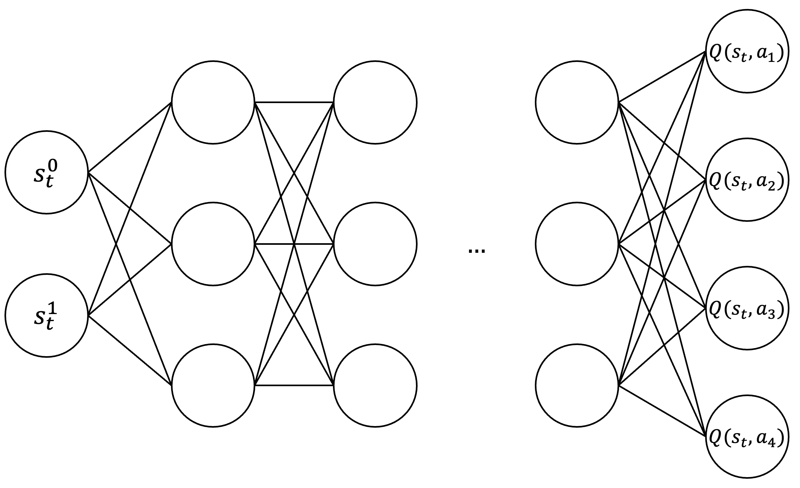
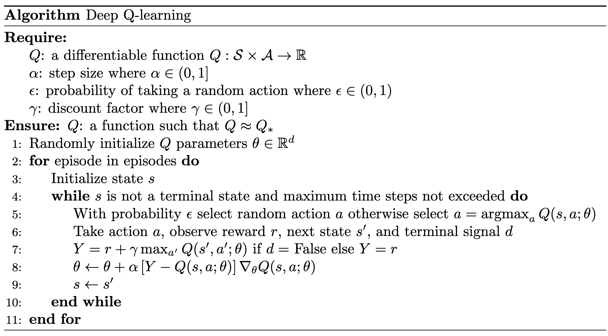
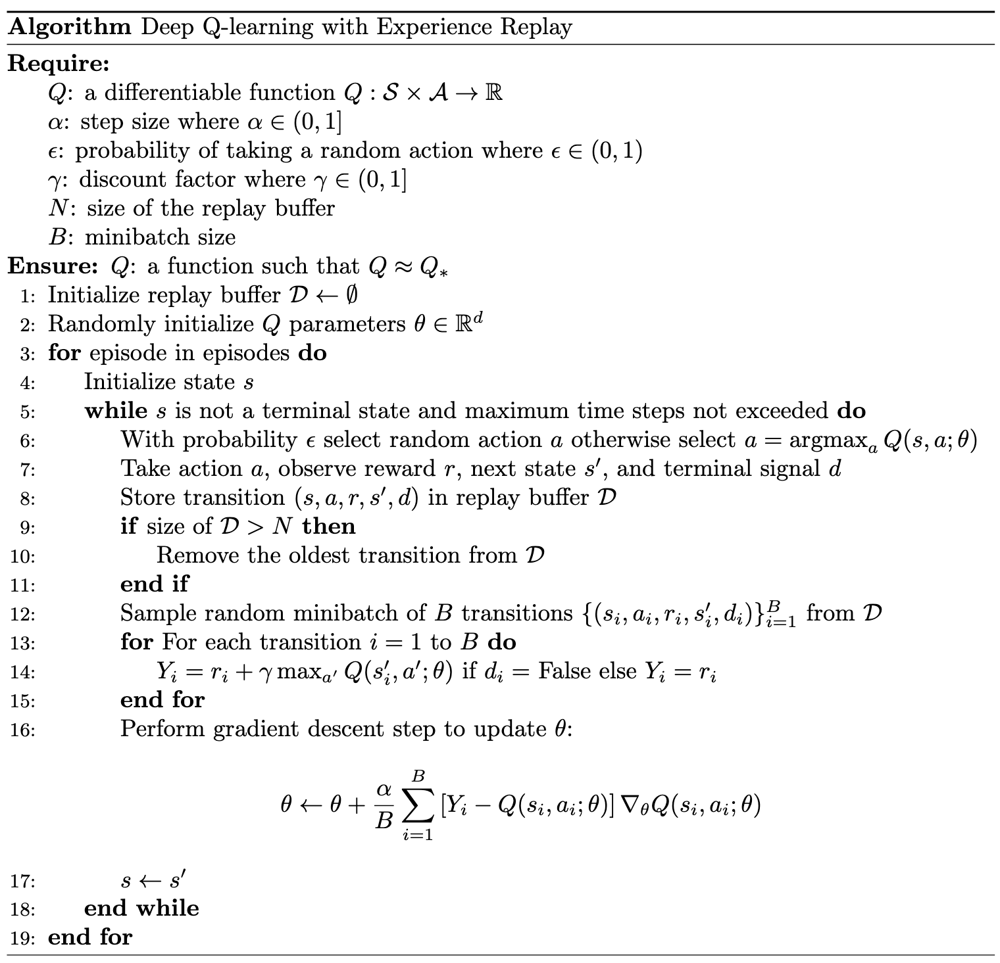

Deep Q-learning
Revised December 18, 2024
The Model Free Control note is optional but recommended background reading.
Classical RL approaches, commonly called tabular methods, maintain a lookup table of values for each state or state-action pair to facilitate necessary updates. For instance, the Q-learning update rule:
\[ \begin{equation*} Q(s_t, a_t) \gets Q(s_t, a_t) + \alpha \left[ r_{t+1} + \gamma \max_{a’} Q(s_{t+1}, a’) - Q(s_t, a_t) \right] \;, \end{equation*} \]
requires access to both the current state-action value \(Q(s_t, a_t)\) and the maximum value over the next state's actions \(\max_{a’}Q(s_{t+1}, a’)\).
However, explicitly learning and storing values for every state-action pair is often infeasible. For example, modeling chess requires approximately \(10^{43}\) states, while Go has roughly \(10^{170}\) states. We thus need methods capable of generalizing values from an agent's experience in a limited subset of the state space. Suitable approaches must satisfy several requirements imposed by the RL problem setting. For instance, methods must learn incrementally from data and handle non-stationary target functions — functions that change over time, such as those in temporal-difference (TD) learning due to bootstrapping.
Linear methods, which represent a state's value as a weighted sum of features, are among the approaches that satisfy these criteria. However, linear methods require an expert to explicitly define the feature set, a task that is often challenging in practice. Deep reinforcement learning (DRL) methods, by contrast, use deep neural networks (DNNs) to approximate the value function, eliminating the need for manual feature engineering. By using DNNs to discover low-dimensional representations of high-dimensional state spaces, DRL approaches can effectively operate in environments with infinitely large input spaces.
Deep Q-learning
Deep Q-learning, a fundamental DRL approach, extends tabular Q-learning by replacing direct access to precomputed Q-values stored in a lookup table with approximation via a DNN. Specifically, a deep Q-network (DQN) takes a state \(s_t\) as input and outputs the estimated Q-values for all possible actions in that state \(f : s_t \rightarrow \left( Q(s_t, a_1), \dots, Q(s_t, a_n) \right)\).
|  |
| For an environment where \(s_t \in \mathbb{R}^2\) and there are four possible actions, a DQN maps the input state to a four-dimensional output: \(f : s_t \rightarrow \mathbb{R}^4\). Each component of this output corresponds to the estimated Q-value of one of the possible actions in the given state. |
The learning procedure for deep Q-learning is largely identical to that of other off-policy control methods using function approximation. Specifically, the DQN \(Q(\theta)\) is parameterized by a column vector \(\theta \in \mathbb{R}^d\), and \(Q(\theta)\) is differentiable with respect to \(\theta\) for all states \(s \in \mathcal{S}\).
The parameters \(\theta\) are optimized using a stochastic gradient-descent-like (SGD) procedure — recall that this is technically semi-gradient descent as we ignore the gradient of the target term \(\gamma \max_{a’} Q(s’,a’;\theta)\) and differentiate only w.r.t. \(Q(s,a;\theta)\) — to minimize squared temporal difference (TD) error:
\[ \begin{equation*} \delta = r + \gamma \max_{a’} Q(s’, a’; \theta) - Q(s, a; \theta) \;. \end{equation*} \]
SGD iteratively adjusts \(\theta\) in the direction that minimizes the square of this error most quickly (i.e., steepest descent). Specifically, the update rule is:
\[ \begin{aligned} \theta_{t+1} &= \theta_t - \frac{1}{2} \alpha \nabla \left[ r + \gamma \max_{a’} Q(s’, a’; \theta) - Q(s, a; \theta) \right]^2 \\ &= \theta_t + \alpha \left[ r + \gamma \max_{a’} Q(s’, a’; \theta) - Q(s, a; \theta) \right] \nabla Q(s, a; \theta) && \text{by the chain rule,} \end{aligned} \]
where \(\theta_t\) is the weight vector at time step \(t\), \(\alpha\) is the step-size parameter, and \(\nabla Q(s, a; \theta)\) is the column vector of partial derivatives (see backpropagation note for details):
\[ \begin{equation*} \nabla Q(s,a;\theta) = \left[\frac{\partial Q(s, a; \theta)}{\partial \theta_1}, \frac{\partial Q(s, a; \theta)} {\partial \theta_2}, \dots, \frac{\partial Q(s, a; \theta)}{\partial \theta_d}\right]^\top \;. \end{equation*} \]
Order of Terms in Loss Calculation
On initial inspection, it may appear that the order of terms in the loss function is inconsequential, as squaring the difference between the target \(Y = r + \gamma \max_{a’} Q(s’, a’; \theta)\) and the prediction \(Q(s, a; \theta)\) appears commutative:
\[ \begin{align*} \left[ Y - Q(s, a; \theta) \right]^2 = \left[ Q(s, a; \theta) - Y \right]^2. \end{align*} \]
A closer examination, however, reveals a subtle difference when computing the gradient:
\[ \begin{align*} \frac{1}{2} \nabla_{\theta} \left[ Q(s, a; \theta) - Y \right]^2 &= \left[ Q(s, a; \theta) - Y \right] \nabla_{\theta} Q(s, a; \theta), \\ \frac{1}{2} \nabla_{\theta} \left[ Y - Q(s, a; \theta) \right]^2 &= \left[ Y - Q(s, a; \theta) \right] \nabla_{\theta} \left( \color{red}{-}Q(s, a; \theta) \right). \end{align*} \]
The negation in the second expression arises from the chain rule. Since the gradient is taken with respect to \(\theta\), differentiating the term \(-Q(s, a; \theta)\) introduces a negative sign.
The equality between \(\left[ Q(s, a; \theta) - Y \right] \nabla_{\theta} Q(s, a; \theta)\) and \(\left[ Y - Q(s, a; \theta) \right] \nabla_{\theta} \left( \color{red}{-}Q(s, a; \theta) \right)\) becomes clear when we explicitly distribute the implicit \(-1\) in the second equation:
\[ \begin{align*} \left[ Y - Q(s, a; \theta) \right] \nabla_{\theta} -Q(s, a; \theta) &= \left[ Y - Q(s, a; \theta) \right] \cdot (-1) \cdot \nabla_{\theta} Q(s, a; \theta) \\ &= \left[ Q(s, a; \theta) - Y \right] \nabla_{\theta} Q(s, a; \theta). \end{align*} \]
This does not imply that one ordering of terms is inherently better than the other. However, it does influence the operator used when updating the parameters. Specifically, if the loss is defined as \((\text{prediction} - \text{target})^2\), the parameter update rule is:
\[ \begin{equation*} \theta \gets \theta - \alpha \left[ Q(s, a; \theta) - Y \right] \nabla_{\theta} Q(s, a; \theta). \end{equation*} \]
If the loss is defined as \((\text{target} - \text{prediction})^2\), the implicit \(-1\) must be accounted for in the gradient, leading to:
\[ \begin{align*} \theta &\gets \theta \color{red}{-} \alpha \left[ Y - Q(s, a; \theta) \right] \nabla_{\theta} \left( \color{red}{-}Q(s, a; \theta) \right) \\ &= \theta \color{red}{+} \alpha \left[ Y - Q(s, a; \theta) \right] \nabla_{\theta} Q(s, a; \theta). \end{align*} \]
In summary, while the loss can be expressed as either \((\text{target} - \text{prediction})^2\) or \((\text{prediction} - \text{target})^2\), care must be taken to apply the appropriate sign in the update rule. This ensures \(\theta\) is adjusted in the direction of steepest descent rather than ascent.
|  |
Notice the similarity of this implementation to that of tabular Q-learning.
Experience Replay
A severe limitation arises from updating \(\theta\) one transition at a time. Consecutive states, \(s_t\) and \(s_{t+1}\), are often highly similar and correlated, violating the independent and identically distributed (i.i.d.) assumption typically required for stochastic gradient methods. As a consequence, the model locally overfits to the most recent transitions. This creates a critical problem at the start of a new episode: the model, having been overly influenced by the transitions at the end of the previous episode, performs poorly in the early states of a new episode. This phenomenon, referred to as catastrophic forgetting, is particularly pronounced when the states encountered early in an episode differ significantly from those observed later.
Experience replay mitigates the correlation among samples by introducing a replay buffer \(\mathcal{D}\), in which transitions \((s, a, r, s’, d)\) (where \(d\) is a terminal signal or “done” flag) are stored for training. To populate the buffer, transitions are collected from the environment using an initial (arbitrary) policy and an action-selection strategy (e.g., \(\epsilon\)-greedy). Once the replay buffer contains transitions, mini-batches of data are randomly sampled from \(\mathcal{D}\) in an i.i.d. manner. These mini-batches are used to update the parameters \(\theta\), resulting in a new policy. This updated policy is then used to gather additional transitions, which are added to \(\mathcal{D}\). The process repeats for a specified number of iterations.
|  |
In addition to resolving the issue of correlated samples, replay buffers offer several other benefits. For example, they reduce the variance of the gradient by enabling updates based on mini-batches of transitions rather than single samples. They also improve sample efficiency by allowing the agent to learn from the same transition multiple times.
Target Networks
A final issue arises due to the constant change in target values. In standard supervised regression — such as predicting the value of a home — the target value (i.e., the actual value of the home) remains fixed and unaffected by updates to the model during training. In a DQN, however, the target \(Y\) depends on the model itself through the term \(\max_{a’} Q(s’, a’; \theta)\). As a result, each gradient update modifies the model, which in turn changes the target values.
To address the moving target problem, we introduce a second DQN \(Q(\theta^-)\) parameterized by a separate set of parameters, \(\theta^-\). The target is computed using \(Q(\theta^-)\), while the primary DQN's parameters, \(\theta\), are updated during training. By decoupling the target computation from the updates to \(\theta\), the target becomes much slower-moving (piecewise constant between target updates). However, if the target \(Q(\theta^-)\) is inaccurate, the model will update its parameters toward incorrect Q-values. Thus, we periodically update \(\theta^-\) by setting it equal to \(\theta\). This approach stabilizes the target while ensuring that the model continues to improve its Q-value estimates.
 |
References
- A tour of reinforcement learning: The view from continuous control (2018)
Benjamin Recht
- Reinforcement Learning: An Introduction (2018)
Richard S. Sutton and Andrew G. Barto
- Deep reinforcement learning: A brief survey (2017)
Kai Arulkumaran, Marc Peter Deisenroth, Miles Brundage, and Anil Anthony Bharath
- Combinatorics of Go (2018)
John Tromp & Gunnar Farnebäck
- Value Function Approximation, Lectures on Reinforcement Learning (2015)
David Silver
- Human-level control through deep reinforcement learning (2016)
Volodymyr Mnih, Koray Kavukcuoglu, David Silver, Andrei A. Rusu, Joel Veness, Marc G. Bellemare, Alex Graves, Martin Riedmiller, Andreas K. Fidjeland, Georg Ostrovski, Stig Petersen, Charles Beattie, Amir Sadik, Ioannis Antonoglou, Helen King, Dharshan Kumaran, Daan Wierstra, Shane Legg, and Demis Hassabis
- Deep RL with Q-Functions (2022)
Sergey Levine
- Batch Constrained Deep Reinforcement Learning (2019)
Daniel Seita